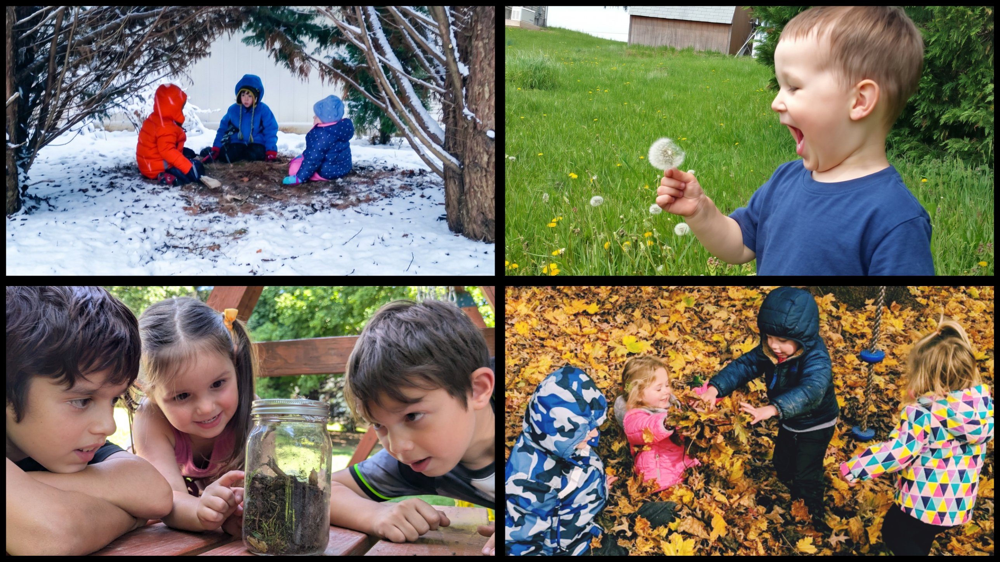
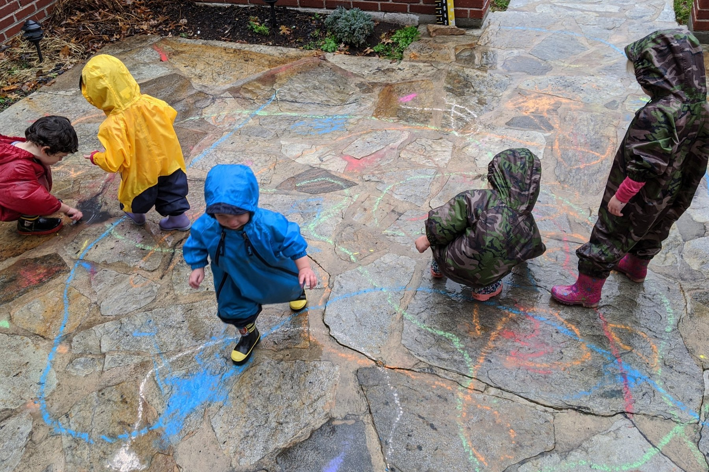
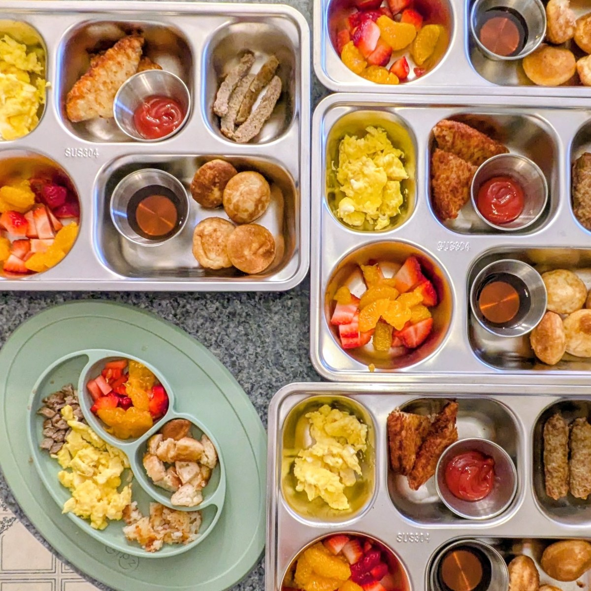
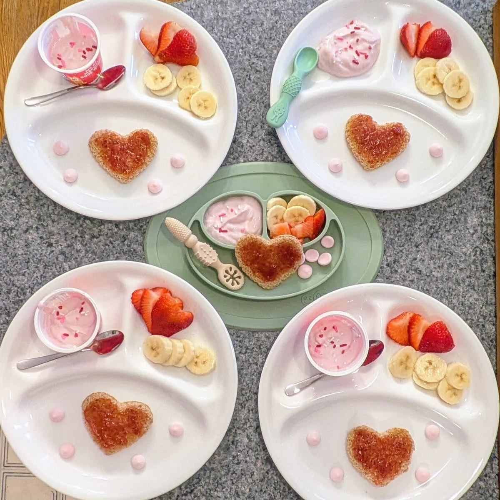
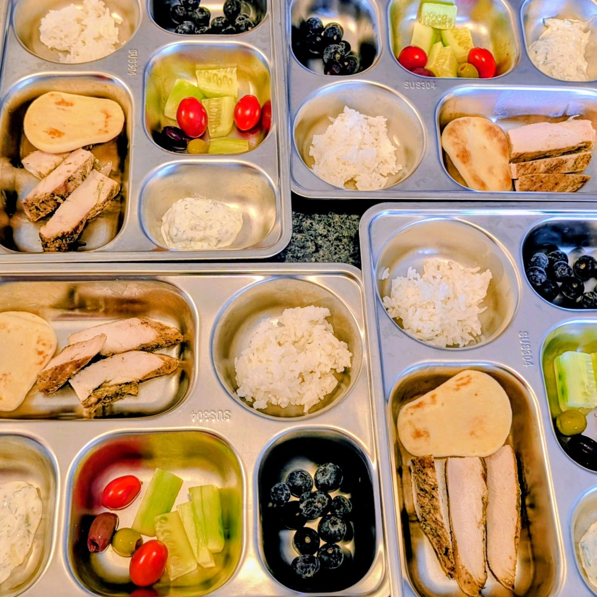

Healthy Start
because the early years matter
A safe, nurturing home where every child is respected and valued.
Meet Jaimie
Hi! I'm Jaimie. Children have been at the center of my life for as long as I can remember. As the second oldest of six, a babysitter, a nanny, an aunt to ten and a mom of two, I've learned what children need at every age: patience, structure, and plenty of room to play and wonder. The smiles, hugs and silly jokes are my favorite part of every day. Being entrusted with your child is the greatest compliment a family can give, and I'm honored to be an extension of yours.
Certified in preschool, infant/toddler and school-age care · Current First Aid & CPR · Safe sleep and emergency trained
Program
“Play is the highest expression of human development in childhood, for it alone is the free expression of what is in a child’s soul.”
— Friedrich Froebel, founder of kindergarten

Learning through literature and play
Childhood is a time for wonder, and every day at Healthy Start is built to honor it — nurturing confident, curious, kind children who love to learn. The foundations we build together prepare children for kindergarten and beyond. Aligned with the Maryland Early Learning Standards, my literature- and play-based curriculum is designed to delight young children and spark new interests.
Each day, children gather for a curated blend of literature, music and movement that weaves the week’s themes together, then explore through layered, hands-on activities that deepen at every stage, growing with each child. Across the year, they progress within eight strands:
This is Me and My Big Feelings foster a strong sense of self. Children celebrate what makes them unique and gain the tools to navigate emotions with confidence and resilience.
Caring Hearts and Healthy Habits help children thrive in a community. They develop friendships, empathy and a sense of fairness alongside the everyday routines that encourage independence.
Literacy Launch and Math Milestones build the early skills behind lifelong academic success. Letters and numbers come alive in favorite books and everyday moments, making early reading and math a joyful discovery.
Wild Wonders and Tinker Time invite children to investigate and create. Following the seasons through the natural world and trying their hand at construction and engineering, they grow as scientists, problem solvers and builders.


Special-interest extensions carry the learning through summer, so children enjoy a full year of discovery.
Infants and toddlers
For infants and toddlers, nothing matters more than a secure bond. I respond consistently to each child's physical, emotional and social needs, so they know they are safe, valued, understood and deserving of love.
School-age care
After a long school day, school-agers need a safe place to unwind. A wholesome snack and the freedom to choose quiet time, fresh air or space to run help restore balance, and homework help is always available.
Meals Provided
One less thing on your plate. Breakfast, lunch and an afternoon snack are provided daily, featuring fresh fruits and vegetables, whole grains and wholesome favorites children love. Menus are adapted to keep children with food allergies safe.



Stay connected
Even when you’re apart, you’ll never miss a moment. Through the parent app on your phone, tablet or computer, you’ll receive real-time updates on meals, naps, diapers, play and more, often with photos. Automatic payments and year-end tax forms are right there too, so everything you need is in one place.
Environment
Center-quality materials in a warm, home setting.
Spaces for discovery
Every space at Healthy Start is chosen to bring the curriculum to life. A rich library supports each week’s themes, while letter and math materials give Literacy Launch and Math Milestones lessons a hands-on home. The light table, sensory bins and engineering toys turn Wild Wonders and Tinker Time into real investigation, and pretend play with a market and dress-up clothes lets children practice the friendships and routines at the heart of Caring Hearts and Healthy Habits.


Outside, a large, tree-shaded yard extends the learning. Children follow the seasons firsthand, from summer water play to winter sledding, while climbing, swinging and active games build the strength and confidence behind every movement activity.


A place to grow together
A family child care home offers something large centers can’t: the chance to grow up in one close, consistent setting. With the same caregiver year after year, children form a strong, nurturing bond, and that security gives them the confidence to branch out and try new things.
Mixed-age groups add to the feeling of family. Research shows these groups tend to be more cooperative and less competitive, as older children step into leadership and caregiving roles and younger children learn from their guidance and example. Layered activities let every child take part at their own level, side by side.


Above all, lasting, loving relationships are the heart of Healthy Start.
Kind Words
Let's talk about your family.
Questions, tours or enrollment, I'd love to hear from you.
Get in TouchYou can also email jaimie@healthystartchildcare.com directly.